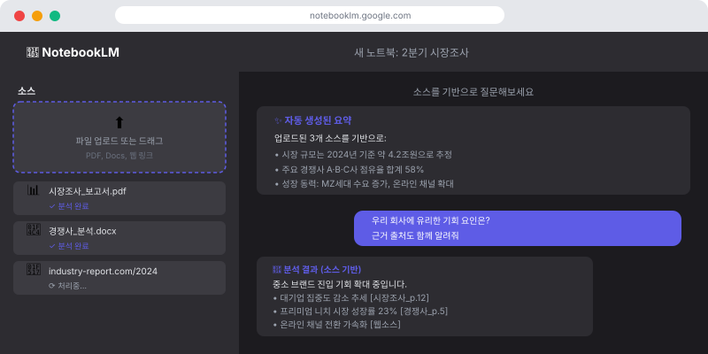
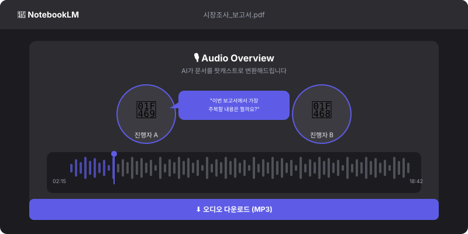

📓 NotebookLM이 뭐예요?
NotebookLM은 Google이 만든 문서 기반 AI 연구 도우미예요. 일반 AI와 다른 점은, AI가 인터넷 전체를 참고하는 게 아니라 내가 올린 문서만을 기반으로 답변한다는 거예요.
예를 들어 회사 내부 보고서, 연구 논문, 교육 자료를 올리면 그 내용 안에서만 정확하게 분석하고 답변해줘요. "AI가 엉뚱한 말을 할까봐 걱정된다"는 분들에게 특히 유용해요.
🚀 NotebookLM 시작하기
- 브라우저에서 notebooklm.google.com 접속
- Google 계정으로 로그인
- "New notebook" 클릭해서 노트북 생성
- 문서 업로드 (PDF, Google Docs, 웹사이트 링크 등)

📁 어떤 문서를 올릴 수 있나요?
- PDF 파일 (보고서, 논문, 매뉴얼)
- Google Docs 문서
- 웹페이지 URL
- YouTube 동영상 링크 (자막 기반 분석)
- 텍스트 파일
💡 주요 활용법 3가지
1. 문서 분석 및 질의응답
문서를 올리고 질문하면 해당 문서 내용을 기반으로 정확하게 답변해줘요. 답변에는 어떤 부분에서 나온 내용인지 출처도 함께 보여줘요.
계약서 PDF를 올리고:
• "이 계약에서 우리 측에 불리한 조항이 있으면 알려줘"
• "계약 기간과 자동 갱신 조건을 정리해줘"
• "위약금 관련 내용은 어디에 있어?"
교육 자료 PDF를 올리고:
• "이 내용을 신규 입사자에게 설명할 수 있도록 요약해줘"
• "가장 중요한 정책 5가지를 뽑아줘"
• "이 중에서 예외 사항이 있는 규정들은 뭐야?"
2. 자동 요약 및 FAQ 생성
문서를 올리면 NotebookLM이 자동으로 요약과 자주 묻는 질문(FAQ)을 생성해줘요. 직접 요청하지 않아도 문서의 핵심 내용을 파악하는 데 큰 도움이 됩니다.
3. 오디오 오버뷰 (팟캐스트 생성!) 🎙️
NotebookLM의 가장 독특한 기능이에요. 문서를 올리면 두 진행자가 대화하는 팟캐스트 형식의 오디오로 변환해줘요. 문서를 읽기 귀찮을 때, 출퇴근 중에 들을 때 유용해요!
팟캐스트 생성 방법
- 노트북에 문서 업로드
- 오른쪽 패널에서 "Audio Overview" 클릭
- "Generate" 버튼 클릭 (생성에 1~2분 소요)
- 생성된 오디오 재생 또는 다운로드

💼 업무별 활용 시나리오
🔬 리서치·분석
경쟁사 보고서, 시장 분석 자료를 올리고 핵심 인사이트 추출
📚 교육·온보딩
회사 매뉴얼을 올리고 신규 직원용 FAQ 자동 생성
⚖️ 문서 검토
계약서, 정책 문서를 올리고 중요 조항 빠르게 파악
🎙️ 학습 콘텐츠
교육 자료를 팟캐스트로 변환해서 이동 중에 학습